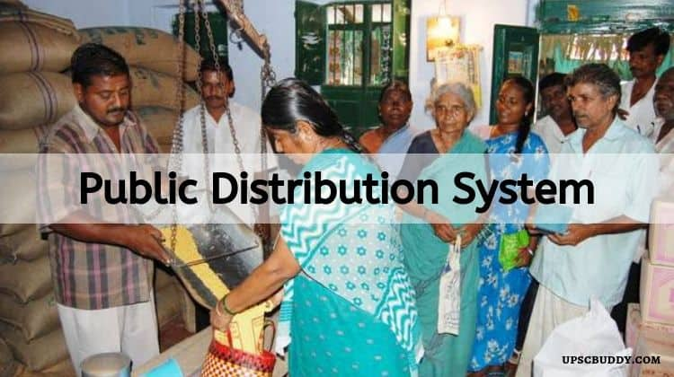

The public distribution system (PDS) evolved as a system of management of scarcity through distribution of foodgrains at affordable prices.PDS is operated under the joint responsibility of the Central and the State/UT Governments. The Central Government, through Food Corporation of India (FCI), has assumed the responsibility for procurement, storage, transportation and bulk allocation of food grains to the State Governments.Public Distribution System (PDS) has evolved as a system of management of scarcity through distribution of food grains at affordable prices. Over the years, PDS has become an important part of Government's Policy for management of food economy in the country. Regular and timely supply is ensured through a tight monitoring scheme, making the Public Distribution System an effective instrument against various powers in the open market and keeping inflator tendencies in check. The following are the major commodities:

Wheat
Rice
Sugar
Kerosene
The Public Distribution System (PDS) in India is a government-run program that aims to distribute essential food items to the country’s economically vulnerable populations at subsidized rates. It plays a crucial role in ensuring food security for millions of Indians. In this post, let us cover the Public Distribution System (PDS) in India. The government of India established the Ministry of Consumer Affairs, Food, and Public Distribution to manage and distribute food grains more efficiently. The Ministry of Food and Public Distribution has been divided into two departments: Department of Food and Public Distribution and Department of Consumer Affairs. The food and public distribution department is further divided into two sections for the procurement and storage of food grain.